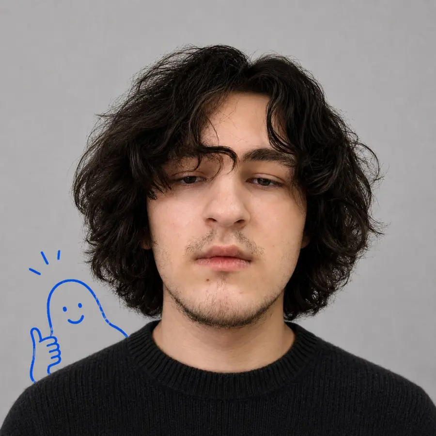

Навожу порядок в хаосе
Собираю идеи, заметки, сообщения и фидбек в понятную структуру.
Project Manager / Junior Product Manager. Санкт-Петербург. AI как рабочий инструмент, а не как красивая надпись в профиле.

19 лет / Project Manager с AI-процессом
Я разбираю идеи, фидбек, задачи и пользовательские проблемы: структурирую вводные, формулирую user stories, собираю backlog и двигаю MVP к состоянию, которое можно показать, проверить и улучшить.
Собираю идеи, заметки, сообщения и фидбек в понятную структуру.
Перевожу “хотелки” в user stories, acceptance criteria и next steps.
Помогаю выделить маленький объем, который можно собрать и проверить.
Делаю так, чтобы команда понимала, что делаем, зачем и что считается готовым.
AI помогает быстрее анализировать и структурировать, но решение остается человеческим.
AI workflow
живой рабочий стек, не декоративная строчка
Фидбек, идеи, заметки, скрины, сообщения и гипотезы. Сначала фиксирую весь шум.
Отделяю реальные проблемы от единичных мнений и случайных пожеланий.
Перевожу выводы в user story, acceptance criteria и понятный next step.
Раскладываю задачи по приоритету, ценности для пользователя и сложности.
Объясняю, что делаем, зачем и как поймем, что результат действительно готов.
Разбираю вводные, задаю уточняющие вопросы, фиксирую договоренности и убираю двусмысленность.
Раскладываю задачи по ценности, срочности и сложности, чтобы команда понимала ближайший фокус.
Готовлю user stories, acceptance criteria, edge cases и понятный definition of done.
Собираю пользовательские сигналы, ищу повторяющиеся боли и перевожу их в продуктовые решения.
Не закидываю людей кашей из идей: фиксирую контекст, решения, статусы и следующий шаг.
Помогаю выбрать маленький объем, который можно быстро собрать, показать и улучшить.
Инструмент для сбора и структурирования фидбека по MVP. Не центр моей личности, а один пример того, как я думаю: из разрозненных сигналов сделать понятный продуктовый порядок.
Фидбек по раннему продукту разлетается по чатам, личным сообщениям, скриншотам и заметкам. Из-за этого команда спорит не о проблеме, а о разрозненных мнениях.
Выделил роли, сценарий сбора фидбека, поля карточки, статусную модель и логику dashboard.
Получился понятный демо-инструмент: его можно показать пользователю, собрать реакцию и дальше улучшать по конкретным сигналам.
Project Manager / AI-assisted workflow
Как пользователь MVP, я хочу оставить фидбек в понятной форме, чтобы команда могла увидеть проблему, контекст и повторяемость сигнала.
Сначала группирую похожие сообщения, затем отделяю баги от пожеланий, проверяю частоту и только после этого превращаю вывод в задачу для команды.
Я не делаю вид, что знаю все. Но я быстро разбираюсь, задаю вопросы, фиксирую структуру и довожу маленькие задачи до результата. Мне комфортно работать там, где много неопределенности.
Есть проект, команда или хаос из задач?
Let's talk ↗